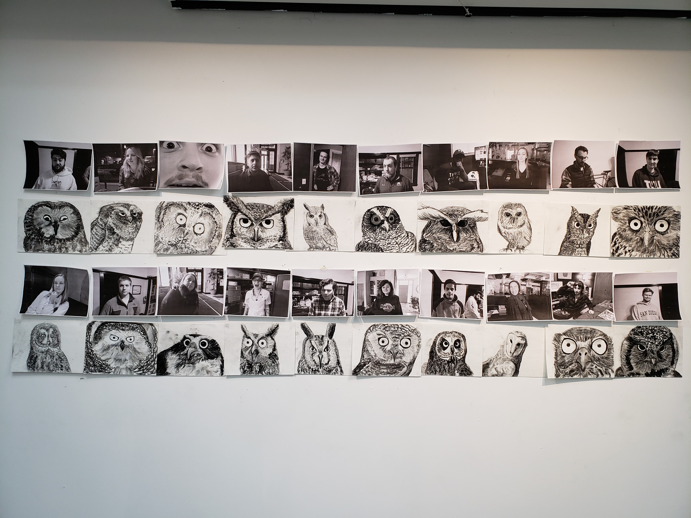
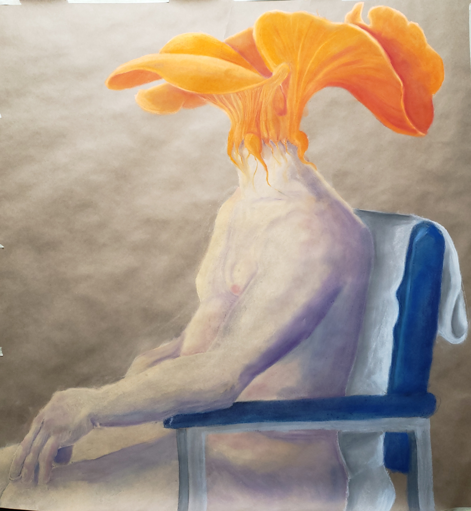
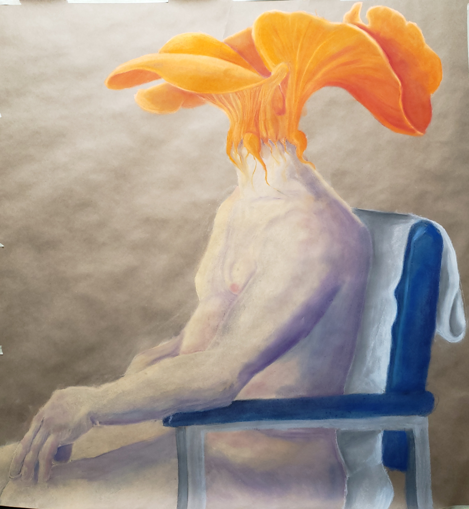

My name is Gabriel Fink (the one on the right) and I am a student at the University of Minnesota in the Bachelor of Individualized Study (BIS). Whenever I tell people what my major is they ask what I am actually studying. The purpose of the BIS program is to allow students with varied interests the freedom to create their own major program. The three focus areas I chose for my major are technical communication, mass communication, and art because I am interested in the different communication methods, written and visual, between the three areas. I am also interested in gaining a multimedia skillset to create multimedia content that informational and engaging. This static website is only the second website I have created so I am excited to keep this updated with my work.
My degree has allowed me to explore multimedia art combining physical and digital media. I have a background working with charcoal and pastels and I have experimented with photography and video to enhance the presentation of my work. One of the themes of my work is the similarity between people and other animals, and even plants and fungi. I try to keep my work fun, vibrant, and interesting through my color palettes, human expressions, and natural subjects.
 

I will update this site over the course of the semester with more of my work as I create more. I look forward to sharing it with everyone!